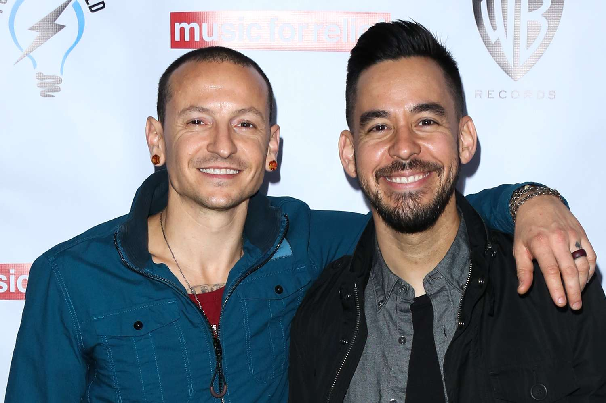
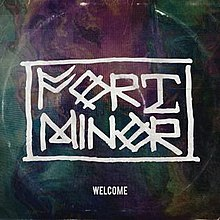
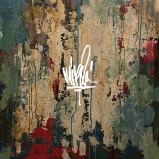

Overview

Mike Shinoda, born on February 11, 1977, is a multi-talented American musician, singer, rapper, songwriter, and record producer.
He co-founded the rock band Linkin Park in 1996 and serves as the band's co-lead vocalist, rhythm guitarist, keyboardist, primary
songwriter, and producer. Shinoda also created a hip-hop-driven side project, Fort Minor, in 2004. He has produced tracks and
albums for artists such as Lupe Fiasco, Styles of Beyond, and the X-Ecutioners. In addition to his music career, Shinoda is an
artist and graphic designer, having graduated with a B.F.A. in Illustration from Art Center College of Design in 1998. He released
his debut solo album, Post Traumatic, in 2018, which reflects his feelings following the death of Chester Bennington, Linkin Park's
lead vocalist in July 20, 2017.
Within Linkin Park
Mike Shinoda was a central figure in Linkin Park, serving as the band's co-lead vocalist, rhythm guitarist, keyboardist, primary songwriter, and
producer. His songwriting skills were instrumental in crafting the band's unique sound, often blending elements of rock, hip hop, and electronic
music. Shinoda was known for his collaborative approach to music creation, frequently working closely with band members and other artists to try
and diversify the band's musical portfolio.
As a musician, his work on the keyboard and guitar helped shape the band's dynamic soundscapes. As a producer, he played a key role in overseeing
the recording process, ensuring that the band's vision was realized in each track. Shinoda's contributions to Linkin Park extended beyond the stage
and studio. He was actively involved in the band's initiatives, including the establishment of Music for Relief, a charity organization dedicated to
providing aid to people affected by natural disasters. Through his work with Linkin Park, Shinoda has left a lasting legacy in the music industry.
After Linkin Park

The tragic death of Chester Bennington, Mike Shinoda's bandmate in Linkin Park, had a profound impact on him. The loss was immense and it sent
ripples through Shinoda's life, leading him to grapple with grief and the void left by his friend's absence. This was a turning point in Shinoda's
life, marking a period of deep introspection and emotional turmoil.
In the immediate aftermath, Shinoda turned to music as a form of therapy, channeling his emotions into his work. This period of intense personal
struggle and reflection gave birth to his solo album, “Post Traumatic”. The album served as a cathartic expression of his grief, a tribute to Chester,
who died on July 20, 2017, and a testament to Shinoda's resilience. It was during this time that Shinoda truly discovered the healing power of music,
using it as a tool to navigate his grief and find a path forward.
Today, Mike Shinoda continues to inspire with his music and his strength. He has emerged from the tragedy with a renewed sense of purpose, using his
platform to advocate for mental health awareness. His journey post-Linkin Park is a testament to his resilience and his commitment to making a positive
impact through his music. Shinoda's story serves as a beacon of hope for those dealing with loss, demonstrating the power of resilience and the
transformative potential of art.
Other Work (Outside Linkin Park)
Mike Shinoda has always been driven by a passion for diverse musical expressions, which led him to explore side projects beyond his work with
Linkin Park. Shinoda sees these side projects as an extension of his identity as a musician, producer, and visual artist

Fort Minor is a musical endeavor that blends elements of hip hop and rock. The project also features collaborations with Ryan Patrick Maginn (Ryu)
and Takbir Bashir (Tak), who are part of the underground hip hop group Styles of Beyond. They have released one studio album, “The Rising Tied”, in
November 2005, and a total of 39 songs. Below is a list of some of the songs they have released:
- Remember The Name
- Believe Me
- Where'd You Go
- Kenji
- Welcome
- Petrified
- Red To Black
- The Hard Way
- In Stereo
- Feel Like Home
- Back Home
- Cigarettes

Mike Shinoda's debut solo album, inspired by the death of Chester Bennington. The following are songs on the album:
- Place To Start
- Over Again
- Watching As I Fall
- Nothing Makes Sense Anymore
- About You (Ft. blackbear)
- Brooding (Instrumental)
- Promises I Can't Keep
- Crossing a Line
- Hold It Together
- Ghosts
- Make It Up as I Go (Ft. K.Flay)
- Lift Off (Ft. Chino Moreno & mgk)
- I.O.U.
- Running From My Shadow (Ft. grandson)
- World's on Fire
- Can't Hear You Now